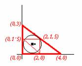

Problema 80
| Sea un triángulo ABC rectángulo en A de lados 3cm, 4 cm y 5cm. Construyamos el triángulo EDF formado por sus puntos medios. Demostrar que el incentro de EDF está en la cicunferencia inscrita a ABC |
DeVincentis, J. , Sato, N., Stigant, D., Hennessy, D.y Rutherford, H.
Solución de Maite y Alicia Peña Alcaraz, alumnas del Colegio Porta Celi de Sevilla (11 de marzo de 2003)
Si tomamos el triángulo en los ejes cartesianos de la siguiente forma:

Entonces, como demostramos en el otro problema (79), como el radio de la circunferencia inscrita es uno, se encontrará el centro de la inscrita del triángulo mayor en el punto donde corten dos paralelas a distancia uno de dos de los lados. Por comodidad, las paralelas a los catetos que son x=1 e y=1, de donde vemos que el centro de la circunferencia inscrita del triángulo ABC es el (1,1).El nuevo triángulo DEF que aparece no es muy difícil probar que es semejante al anterior (rectángulo y las medidas de sus lados son proporcionales según la razón de proporcionalidad ½; luego su radio también lo será. Como su radio vale entonces ½, trazando paralelas a sus dos catetos a una distancia de ½, también nos dará el incentro, en el punto (2-1/2, 1´5-1/2) que el lo mismo que (1´5,1). Si la distancia de ese incentro al otro fuera igual al radio de la circunferencia inscrita mayor, entonces estaría contenido en la circunferencia, como se pide que se demuestre, pero al calcular la distancia vemos que esto no se cumple, sino que la distancia de un incentro a otro es 0,5, es decir el radio de la circunferencia inscrita a DEF. Luego el incentro de ABC está contenido en la circunferencia inscrita de DEF, pero no al contrario como se pedía que se demostrara.